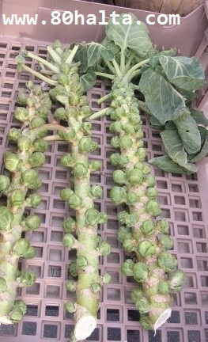

ئالدىنقى يازما
ئالدىنقى يازما كېيىنكى يازما
كېيىنكى يازما
ئىممۇنېت كۈچىنى ئاشۇرىدىغان يەتتە خىل يېمەكلىك
ئاپتور:Birzat ۋاقتى:2011-10-28


بىرزات ئىلاۋىسى:ئوخشاش بولمىغان يۇرتلارنىڭ پەرقلىق كىلىمات ئالاھىدىلىكى بويچە شۇ يۇرت خەلقلىرىنىڭ ئوزۇقلىنىش ئادىتىدە نۇرغۇنلىغان ئوخشىماسلىقلار مەۋجۇت بولىدۇ. خەلقىمىزدە ساغلاملىقنى ئاسراپ كېسەللىكنىڭ ئالدىنى ئىلىش ئۈچۈن مىزاج ئالاھىدىلىكىگە قاراپ ئوزۇقلىنىش ھەمدە پەسىللەرنىڭ ئالاھىدىلىكىگە ئاساسەن ئۆز مىزاجىغا ماس كىلدىغان يېمەكلىكلەرنى تاللاپ ئىستىمال قىلىش ئادىتى شەكىللەنگەن. بەزى يېمەكلىكلەر ئىسسىق مىزاج ئادەملەرگە مەنپەئەت قىلغان بىلەن سوغۇق مىزاجلىقلارغا زەرەر قىلىشى مومكىن، مەسىلەن: قېتىق، يۇمغاقسۈت، قارا ئۈرۈك...دېگەندەك. بۇ خىل ئەھۋالغا-شۇ ۋاقىتتىكى مىزاج ئۆزگىرىش ئالامەتلىرىگە قاراپ ئوزۇقلۇقلارنى تاللاپ ئىستىمال قىلىشتا يالغۇز تېۋىپ-ھۆكۈمالار بىلىپلا قالماستىن كەڭ خەلققە ئوموملاشقان بىر ئېسىل ئەنئەنىدۇر. بۇ ھەقتە ئىلگىرى بلوگىمىزدا ئانچە-مۇنچە يازمىلار يېزىلغان، قىزىققۇچىلار ئىزدەپ كۆرۈپ باقسا بولىدۇ. بۇ گەپلەرنى دېيىشىمىزدىن مەقسەت تۆۋەندە سىز ئوقىماقچى بولغان ماقالىدىكى كۆپۈنچە يېمەكلىكنى سىز يەپ باقمىغان بەلكى كۆرۈپ، ئىسمىنى ئاڭلاپمۇ باقمىغان بولىشىڭىز مومكىنلىكىنى نەزەردە تۇتۇپ ئۆزىمىزنىڭ خاس ئوزۇقلىنىش ئادەتلىرىمىز ئەسلىتىپ ئۆتۈلدى. نىيوروك شەھرى ۋېلككورنىل تىببى ئىنىستۇتى(Weill Cornell Medical College) نىڭ پىروفىسورى، ئىممۇنىت ۋە مىكرو بىئولاگىيە كەسپىنىڭ تىببى پەنلەر دوكتۇرى ئاننا موسكونا(Ane Moscona) نىڭ ئېيتقان قىش كىلىشتىن بۇرۇن ساغلاملىق ئۈچۈن پىلان تۈزەش ھەمدە سوغۇق كۈنلەردە ئىممۇنېت كۈچىنى ئاشۇرىدىغان يەتتە خىل يېمەكلىك ھەققىدىكى بايانلىرى دىققىتىڭىزدە بولىدۇ، كۆرۈپ پايدىلانغايسىلەر.
ئىممۇنېت كۈچىنى ئاشۇرىدىغان يەتتە خىل يېمەكلىك
ئېنگىلىزچىدىن تەرجىمە قىلغۇچى:تىلمىش
مۇشۇ يېقىنقى بىر ھەپتە ئىچىدە دورا دۇكانلىرىدا زۇكام ۋە ئۇنىڭ ئالدىنى ئالىدىغان دورا ئېلانلىرىنىڭ كۆپۈيۈپ كىتىشى قىش پەسلى يىتىپ كىلىش ئالدىدا تۇرغانلىقىنىڭ بىر ئېنىق ئىپادىسى بولسا كىرەك.مۇبادا سىز قىش پەسلىدىكى تۈرلۈك كىسەللەرنىڭ ئالدىنى ئېلىشقا تەييارلىق قىلىپ بولالمىغان بولسىڭىز،سىز چۇقۇم يىتەرلىك ۋاقىت چىقىرىپ بۇنى كۈندىلىك پائالىيەت تەرتىپىگە كىرگۈزۋېلىڭ. نىيوروك شەھرى ۋېلككورنىل تىببى ئىنىستۇتى(Weill Cornell Medical College) نىڭ پىروفىسورى، ئىممۇنىت ۋە مىكرو بىئولاگىيە كەسپىنىڭ تىببى پەنلەر دوكتۇرى ئاننا موسكونا(Ane Moscona) مۇنداق دەيدۇ: ‹قىش كىلىشتىن بۇرۇنقى بۇ خىل كىسەللىكلەرنىڭ ئالدىنى ئېلىش پىلان كۈن تەرتىپى سىزنىڭ كىسەل بىلەن يۇقۇملىنىش خەۋپىڭىزنى 90 پىرسەنىت ئازايتىدۇ.سىز كۈندۈلۈك تامىقىڭىزغا بەزى مىزىلىك، ئىممۇنىت كۈچىنىڭىزنى ئاشۇرىدىغان يىمەكلىكلەرنى ئىستىمال قىلىش ئارقىلىق قىش پەسلىدىكى قەھرىتان سوغوققا تەبىي ھالدا تاقابىل تۇرالايسىز. سوغۇق ۋە يۇقۇملۇق زۇكام سىزدىن نېرى تۇرىدىغان بولىدۇ›.

1. قاتلىق كاپۇستا (球芽甘蓝) (كرېست گۈللۈكلەر ئائىلىسىدىكى ئىككى يىللىق ، سامان غوللۇق ئۆسۈملۈك . غولى توم ۋە يوغان بولۇپ ، شارغا سەل ئوخشايدۇ ، رەڭگى ئاقۇچ يېشىل ياكى سۆسۈن كېلىدۇ ؛ غولى كۆكتات قىلىنىدۇ) بۇ كۈز ۋە قىش پەسىللىك كۆكتات بولۇپ، تەركىبىدە ئىممۇنىت سېستىمىڭىزنىڭ ساغلاملىقىغا كاپالەتلىك قىلىدىغان ۋىتامىن A بار. ئۇنىڭدىن باشقا ئالىملارنىڭ دىيىشىچە بۇ خىل كۆكتاتلار راك كىسىلىنى كەلتۈرۈپ چىقىرىدىغان ماددىلارنى بەدەن سىرتىغا چىقىرىپ تاشلاش رولىنى ئوينايدىغان پايتونۇچىرىت( بىر خىل ئۆسۈملۈك ئۇزۇقلۇق ماددىسى Phytonutrient) بىلەن تەمىنلەيدىكەن.

2. موگو(蘑菇)

 يازما مەنبەسى: بېكەت ئەسىرى
يازما مەنبەسى: بېكەت ئەسىرى خەتكۈش: ئىممۇنېت يېمەكلىك
خەتكۈش: ئىممۇنېت يېمەكلىك  مۇناسىۋەتلىك يازمىلار:
مۇناسىۋەتلىك يازمىلار:
 قايتۇرما
قايتۇرما ]
]